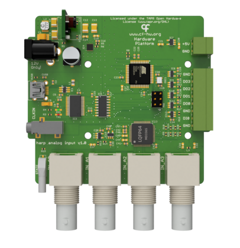

Namespace Harp.AnalogInput
Harp Analog Input
This device samples simultaneously up to 4 analog signals with 16 bits resolution, low noise and and analog input range of ±10 V for all channels.

Key Features
- 4 ADC channels
- 16bit resolution with an input range of +-10V
- Simultaneous acquisition of all channels
- Threshold detection and event generation
Connectivity
- 4 BNC connectors for analog input
- I/O connector for TTL signals
Interface
The interface with the Harp board can be done through Bonsai
Licensing
Each subdirectory will contain a license or, possibly, a set of licenses if it involves both hardware and software.
| AnalogInput | |
|---|---|
| whoAmI | 1236 |
| firmwareVersion | 1.2 |
| hardwareTargets | 1.0 |
Registers
| name | address | type | length | access | description | range | interfaceType |
|---|---|---|---|---|---|---|---|
| AcquisitionState | 32 | U8 | Write | Enables the data acquisition. | EnableFlag | ||
| AnalogData | 33 | S16 | 4 | Event | Value from a single read of all ADC channels. | AnalogDataPayload | |
| DigitalInputState | 34 | U8 | Event | State of the digital input pin 0. | DigitalInputs | ||
| RangeAndFilter | 37 | U8 | Write | Sets the range and LowPass filter cutoff of the ADC. | RangeAndFilterConfig | ||
| SamplingRate | 38 | U8 | Write | Sets the sampling frequency of the ADC. | SamplingRateMode | ||
| DI0Trigger | 39 | U8 | Write | Configuration of the digital input pin 0. | TriggerConfig | ||
| DO0Sync | 40 | U8 | Write | Configuration of the digital output pin 0. | SyncConfig | ||
| DO0PulseWidth | 41 | U8 | Write | Pulse duration (ms) for the digital output pin 0. The pulse will only be emitted when DO0Sync == Pulse. | [1:250] | ||
| DigitalOutputSet | 42 | U8 | Write | Set the specified digital output lines. | DigitalOutputs | ||
| DigitalOutputClear | 43 | U8 | Write | Clear the specified digital output lines. | DigitalOutputs | ||
| DigitalOutputToggle | 44 | U8 | Write | Toggle the specified digital output lines | DigitalOutputs | ||
| DigitalOutputState | 45 | U8 | Write, Event | Write the state of all digital output lines. An event will be emitted when the value of any pin was changed by a threshold event. | DigitalOutputs | ||
| SyncOutput | 48 | U8 | Write | Digital output that will be set when acquisition starts. | StartSyncOutputTarget | ||
| DO0TargetChannel | 58 | U8 | Write | Target ADC channel that will be used to trigger a threshold event on DO0 pin. | AdcChannel | ||
| DO1TargetChannel | 59 | U8 | Write | Target ADC channel that will be used to trigger a threshold event on DO1 pin. | AdcChannel | ||
| DO2TargetChannel | 60 | U8 | Write | Target ADC channel that will be used to trigger a threshold event on DO2 pin. | AdcChannel | ||
| DO3TargetChannel | 61 | U8 | Write | Target ADC channel that will be used to trigger a threshold event on DO3 pin. | AdcChannel | ||
| DO0Threshold | 66 | S16 | Write | Value used to threshold an ADC read, and trigger DO0 pin. | |||
| DO1Threshold | 67 | S16 | Write | Value used to threshold an ADC read, and trigger DO1 pin. | |||
| DO2Threshold | 68 | S16 | Write | Value used to threshold an ADC read, and trigger DO2 pin. | |||
| DO3Threshold | 69 | S16 | Write | Value used to threshold an ADC read, and trigger DO3 pin. | |||
| DO0TimeAboveThreshold | 74 | U16 | Write | Time (ms) above threshold value that is required to trigger a DO0 pin event. | 0 | ||
| DO1TimeAboveThreshold | 75 | U16 | Write | Time (ms) above threshold value that is required to trigger a DO1 pin event. | 0 | ||
| DO2TimeAboveThreshold | 76 | U16 | Write | Time (ms) above threshold value that is required to trigger a DO2 pin event. | 0 | ||
| DO3TimeAboveThreshold | 77 | U16 | Write | Time (ms) above threshold value that is required to trigger a DO3 pin event. | 0 | ||
| DO0TimeBelowThreshold | 82 | U16 | Write | Time (ms) below threshold value that is required to trigger a DO0 pin event. | 0 | ||
| DO1TimeBelowThreshold | 83 | U16 | Write | Time (ms) below threshold value that is required to trigger a DO1 pin event. | 0 | ||
| DO2TimeBelowThreshold | 84 | U16 | Write | Time (ms) below threshold value that is required to trigger a DO2 pin event. | 0 | ||
| DO3TimeBelowThreshold | 85 | U16 | Write | Time (ms) below threshold value that is required to trigger a DO3 pin event. | 0 |
Classes
- AcquisitionState
Represents a register that enables the data acquisition.
- AnalogData
Represents a register that value from a single read of all ADC channels.
- AsyncDevice
Represents an asynchronous API to configure and interface with AnalogInput devices.
- CreateAcquisitionStatePayload
Represents an operator that creates a message payload that enables the data acquisition.
- CreateAnalogDataPayload
Represents an operator that creates a message payload that value from a single read of all ADC channels.
- CreateDI0TriggerPayload
Represents an operator that creates a message payload that configuration of the digital input pin 0.
- CreateDO0PulseWidthPayload
Represents an operator that creates a message payload that pulse duration (ms) for the digital output pin 0. The pulse will only be emitted when DO0Sync == Pulse.
- CreateDO0SyncPayload
Represents an operator that creates a message payload that configuration of the digital output pin 0.
- CreateDO0TargetChannelPayload
Represents an operator that creates a message payload that target ADC channel that will be used to trigger a threshold event on DO0 pin.
- CreateDO0ThresholdPayload
Represents an operator that creates a message payload that value used to threshold an ADC read, and trigger DO0 pin.
- CreateDO0TimeAboveThresholdPayload
Represents an operator that creates a message payload that time (ms) above threshold value that is required to trigger a DO0 pin event.
- CreateDO0TimeBelowThresholdPayload
Represents an operator that creates a message payload that time (ms) below threshold value that is required to trigger a DO0 pin event.
- CreateDO1TargetChannelPayload
Represents an operator that creates a message payload that target ADC channel that will be used to trigger a threshold event on DO1 pin.
- CreateDO1ThresholdPayload
Represents an operator that creates a message payload that value used to threshold an ADC read, and trigger DO1 pin.
- CreateDO1TimeAboveThresholdPayload
Represents an operator that creates a message payload that time (ms) above threshold value that is required to trigger a DO1 pin event.
- CreateDO1TimeBelowThresholdPayload
Represents an operator that creates a message payload that time (ms) below threshold value that is required to trigger a DO1 pin event.
- CreateDO2TargetChannelPayload
Represents an operator that creates a message payload that target ADC channel that will be used to trigger a threshold event on DO2 pin.
- CreateDO2ThresholdPayload
Represents an operator that creates a message payload that value used to threshold an ADC read, and trigger DO2 pin.
- CreateDO2TimeAboveThresholdPayload
Represents an operator that creates a message payload that time (ms) above threshold value that is required to trigger a DO2 pin event.
- CreateDO2TimeBelowThresholdPayload
Represents an operator that creates a message payload that time (ms) below threshold value that is required to trigger a DO2 pin event.
- CreateDO3TargetChannelPayload
Represents an operator that creates a message payload that target ADC channel that will be used to trigger a threshold event on DO3 pin.
- CreateDO3ThresholdPayload
Represents an operator that creates a message payload that value used to threshold an ADC read, and trigger DO3 pin.
- CreateDO3TimeAboveThresholdPayload
Represents an operator that creates a message payload that time (ms) above threshold value that is required to trigger a DO3 pin event.
- CreateDO3TimeBelowThresholdPayload
Represents an operator that creates a message payload that time (ms) below threshold value that is required to trigger a DO3 pin event.
- CreateDigitalInputStatePayload
Represents an operator that creates a message payload that state of the digital input pin 0.
- CreateDigitalOutputClearPayload
Represents an operator that creates a message payload that clear the specified digital output lines.
- CreateDigitalOutputSetPayload
Represents an operator that creates a message payload that set the specified digital output lines.
- CreateDigitalOutputStatePayload
Represents an operator that creates a message payload that write the state of all digital output lines. An event will be emitted when the value of any pin was changed by a threshold event.
- CreateDigitalOutputTogglePayload
Represents an operator that creates a message payload that toggle the specified digital output lines.
- CreateMessage
Represents an operator which creates standard message payloads for the AnalogInput device.
- CreateRangeAndFilterPayload
Represents an operator that creates a message payload that sets the range and LowPass filter cutoff of the ADC.
- CreateSamplingRatePayload
Represents an operator that creates a message payload that sets the sampling frequency of the ADC.
- CreateSyncOutputPayload
Represents an operator that creates a message payload that digital output that will be set when acquisition starts.
- CreateTimestampedAcquisitionStatePayload
Represents an operator that creates a timestamped message payload that enables the data acquisition.
- CreateTimestampedAnalogDataPayload
Represents an operator that creates a timestamped message payload that value from a single read of all ADC channels.
- CreateTimestampedDI0TriggerPayload
Represents an operator that creates a timestamped message payload that configuration of the digital input pin 0.
- CreateTimestampedDO0PulseWidthPayload
Represents an operator that creates a timestamped message payload that pulse duration (ms) for the digital output pin 0. The pulse will only be emitted when DO0Sync == Pulse.
- CreateTimestampedDO0SyncPayload
Represents an operator that creates a timestamped message payload that configuration of the digital output pin 0.
- CreateTimestampedDO0TargetChannelPayload
Represents an operator that creates a timestamped message payload that target ADC channel that will be used to trigger a threshold event on DO0 pin.
- CreateTimestampedDO0ThresholdPayload
Represents an operator that creates a timestamped message payload that value used to threshold an ADC read, and trigger DO0 pin.
- CreateTimestampedDO0TimeAboveThresholdPayload
Represents an operator that creates a timestamped message payload that time (ms) above threshold value that is required to trigger a DO0 pin event.
- CreateTimestampedDO0TimeBelowThresholdPayload
Represents an operator that creates a timestamped message payload that time (ms) below threshold value that is required to trigger a DO0 pin event.
- CreateTimestampedDO1TargetChannelPayload
Represents an operator that creates a timestamped message payload that target ADC channel that will be used to trigger a threshold event on DO1 pin.
- CreateTimestampedDO1ThresholdPayload
Represents an operator that creates a timestamped message payload that value used to threshold an ADC read, and trigger DO1 pin.
- CreateTimestampedDO1TimeAboveThresholdPayload
Represents an operator that creates a timestamped message payload that time (ms) above threshold value that is required to trigger a DO1 pin event.
- CreateTimestampedDO1TimeBelowThresholdPayload
Represents an operator that creates a timestamped message payload that time (ms) below threshold value that is required to trigger a DO1 pin event.
- CreateTimestampedDO2TargetChannelPayload
Represents an operator that creates a timestamped message payload that target ADC channel that will be used to trigger a threshold event on DO2 pin.
- CreateTimestampedDO2ThresholdPayload
Represents an operator that creates a timestamped message payload that value used to threshold an ADC read, and trigger DO2 pin.
- CreateTimestampedDO2TimeAboveThresholdPayload
Represents an operator that creates a timestamped message payload that time (ms) above threshold value that is required to trigger a DO2 pin event.
- CreateTimestampedDO2TimeBelowThresholdPayload
Represents an operator that creates a timestamped message payload that time (ms) below threshold value that is required to trigger a DO2 pin event.
- CreateTimestampedDO3TargetChannelPayload
Represents an operator that creates a timestamped message payload that target ADC channel that will be used to trigger a threshold event on DO3 pin.
- CreateTimestampedDO3ThresholdPayload
Represents an operator that creates a timestamped message payload that value used to threshold an ADC read, and trigger DO3 pin.
- CreateTimestampedDO3TimeAboveThresholdPayload
Represents an operator that creates a timestamped message payload that time (ms) above threshold value that is required to trigger a DO3 pin event.
- CreateTimestampedDO3TimeBelowThresholdPayload
Represents an operator that creates a timestamped message payload that time (ms) below threshold value that is required to trigger a DO3 pin event.
- CreateTimestampedDigitalInputStatePayload
Represents an operator that creates a timestamped message payload that state of the digital input pin 0.
- CreateTimestampedDigitalOutputClearPayload
Represents an operator that creates a timestamped message payload that clear the specified digital output lines.
- CreateTimestampedDigitalOutputSetPayload
Represents an operator that creates a timestamped message payload that set the specified digital output lines.
- CreateTimestampedDigitalOutputStatePayload
Represents an operator that creates a timestamped message payload that write the state of all digital output lines. An event will be emitted when the value of any pin was changed by a threshold event.
- CreateTimestampedDigitalOutputTogglePayload
Represents an operator that creates a timestamped message payload that toggle the specified digital output lines.
- CreateTimestampedRangeAndFilterPayload
Represents an operator that creates a timestamped message payload that sets the range and LowPass filter cutoff of the ADC.
- CreateTimestampedSamplingRatePayload
Represents an operator that creates a timestamped message payload that sets the sampling frequency of the ADC.
- CreateTimestampedSyncOutputPayload
Represents an operator that creates a timestamped message payload that digital output that will be set when acquisition starts.
- DI0Trigger
Represents a register that configuration of the digital input pin 0.
- DO0PulseWidth
Represents a register that pulse duration (ms) for the digital output pin 0. The pulse will only be emitted when DO0Sync == Pulse.
- DO0Sync
Represents a register that configuration of the digital output pin 0.
- DO0TargetChannel
Represents a register that target ADC channel that will be used to trigger a threshold event on DO0 pin.
- DO0Threshold
Represents a register that value used to threshold an ADC read, and trigger DO0 pin.
- DO0TimeAboveThreshold
Represents a register that time (ms) above threshold value that is required to trigger a DO0 pin event.
- DO0TimeBelowThreshold
Represents a register that time (ms) below threshold value that is required to trigger a DO0 pin event.
- DO1TargetChannel
Represents a register that target ADC channel that will be used to trigger a threshold event on DO1 pin.
- DO1Threshold
Represents a register that value used to threshold an ADC read, and trigger DO1 pin.
- DO1TimeAboveThreshold
Represents a register that time (ms) above threshold value that is required to trigger a DO1 pin event.
- DO1TimeBelowThreshold
Represents a register that time (ms) below threshold value that is required to trigger a DO1 pin event.
- DO2TargetChannel
Represents a register that target ADC channel that will be used to trigger a threshold event on DO2 pin.
- DO2Threshold
Represents a register that value used to threshold an ADC read, and trigger DO2 pin.
- DO2TimeAboveThreshold
Represents a register that time (ms) above threshold value that is required to trigger a DO2 pin event.
- DO2TimeBelowThreshold
Represents a register that time (ms) below threshold value that is required to trigger a DO2 pin event.
- DO3TargetChannel
Represents a register that target ADC channel that will be used to trigger a threshold event on DO3 pin.
- DO3Threshold
Represents a register that value used to threshold an ADC read, and trigger DO3 pin.
- DO3TimeAboveThreshold
Represents a register that time (ms) above threshold value that is required to trigger a DO3 pin event.
- DO3TimeBelowThreshold
Represents a register that time (ms) below threshold value that is required to trigger a DO3 pin event.
- Device
Represents an observable source of messages from the Harp device connected at the specified serial port.
- DigitalInputState
Represents a register that state of the digital input pin 0.
- DigitalOutputClear
Represents a register that clear the specified digital output lines.
- DigitalOutputSet
Represents a register that set the specified digital output lines.
- DigitalOutputState
Represents a register that write the state of all digital output lines. An event will be emitted when the value of any pin was changed by a threshold event.
- DigitalOutputToggle
Represents a register that toggle the specified digital output lines.
- FilterRegister
Represents an operator that filters register-specific messages reported by the Harp.AnalogInput device.
- Format
Represents an operator which formats a sequence of values as specific AnalogInput register messages.
- GroupByRegister
Represents an operator that groups the sequence of Harp.AnalogInput" messages by register type.
- Parse
Represents an operator which filters and selects specific messages reported by the AnalogInput device.
- RangeAndFilter
Represents a register that sets the range and LowPass filter cutoff of the ADC.
- SamplingRate
Represents a register that sets the sampling frequency of the ADC.
- SyncOutput
Represents a register that digital output that will be set when acquisition starts.
- TimestampedAcquisitionState
Provides methods for manipulating timestamped messages from the AcquisitionState register.
- TimestampedAnalogData
Provides methods for manipulating timestamped messages from the AnalogData register.
- TimestampedDI0Trigger
Provides methods for manipulating timestamped messages from the DI0Trigger register.
- TimestampedDO0PulseWidth
Provides methods for manipulating timestamped messages from the DO0PulseWidth register.
- TimestampedDO0Sync
Provides methods for manipulating timestamped messages from the DO0Sync register.
- TimestampedDO0TargetChannel
Provides methods for manipulating timestamped messages from the DO0TargetChannel register.
- TimestampedDO0Threshold
Provides methods for manipulating timestamped messages from the DO0Threshold register.
- TimestampedDO0TimeAboveThreshold
Provides methods for manipulating timestamped messages from the DO0TimeAboveThreshold register.
- TimestampedDO0TimeBelowThreshold
Provides methods for manipulating timestamped messages from the DO0TimeBelowThreshold register.
- TimestampedDO1TargetChannel
Provides methods for manipulating timestamped messages from the DO1TargetChannel register.
- TimestampedDO1Threshold
Provides methods for manipulating timestamped messages from the DO1Threshold register.
- TimestampedDO1TimeAboveThreshold
Provides methods for manipulating timestamped messages from the DO1TimeAboveThreshold register.
- TimestampedDO1TimeBelowThreshold
Provides methods for manipulating timestamped messages from the DO1TimeBelowThreshold register.
- TimestampedDO2TargetChannel
Provides methods for manipulating timestamped messages from the DO2TargetChannel register.
- TimestampedDO2Threshold
Provides methods for manipulating timestamped messages from the DO2Threshold register.
- TimestampedDO2TimeAboveThreshold
Provides methods for manipulating timestamped messages from the DO2TimeAboveThreshold register.
- TimestampedDO2TimeBelowThreshold
Provides methods for manipulating timestamped messages from the DO2TimeBelowThreshold register.
- TimestampedDO3TargetChannel
Provides methods for manipulating timestamped messages from the DO3TargetChannel register.
- TimestampedDO3Threshold
Provides methods for manipulating timestamped messages from the DO3Threshold register.
- TimestampedDO3TimeAboveThreshold
Provides methods for manipulating timestamped messages from the DO3TimeAboveThreshold register.
- TimestampedDO3TimeBelowThreshold
Provides methods for manipulating timestamped messages from the DO3TimeBelowThreshold register.
- TimestampedDigitalInputState
Provides methods for manipulating timestamped messages from the DigitalInputState register.
- TimestampedDigitalOutputClear
Provides methods for manipulating timestamped messages from the DigitalOutputClear register.
- TimestampedDigitalOutputSet
Provides methods for manipulating timestamped messages from the DigitalOutputSet register.
- TimestampedDigitalOutputState
Provides methods for manipulating timestamped messages from the DigitalOutputState register.
- TimestampedDigitalOutputToggle
Provides methods for manipulating timestamped messages from the DigitalOutputToggle register.
- TimestampedRangeAndFilter
Provides methods for manipulating timestamped messages from the RangeAndFilter register.
- TimestampedSamplingRate
Provides methods for manipulating timestamped messages from the SamplingRate register.
- TimestampedSyncOutput
Provides methods for manipulating timestamped messages from the SyncOutput register.
Structs
- AnalogDataPayload
Represents the payload of the AnalogData register.
Enums
- AdcChannel
Available target analog channels to be targeted for threshold events.
- DigitalInputs
Available digital input lines.
- DigitalOutputs
Specifies the state of port digital output lines.
- RangeAndFilterConfig
Available settings to set the range (Volt) and LowPass filter cutoff (Hz) of the ADC.
- SamplingRateMode
Available sampling frequency settings of the ADC.
- StartSyncOutputTarget
Available digital output pins that are able to be triggered on acquisition start.
- SyncConfig
Available configurations when using DO0 pin to report firmware events.
- TriggerConfig
Available configurations for when using DI0 as an acquisition trigger.